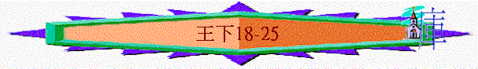

|
屬神國度的衰落 |
|||
|
二王—行神的旨意得堅固
|
二國—不專心順服終分裂
|
二先知—神能力彰顯仍剛硬
|
二結局—繼續行惡至終亡國
|
|
王上1-10 |
王上11-16 |
王上17-王下9:4 |
王下9:5-25:30 |
四.二結局----繼續行惡至終亡國(王下9:5-25:30)
4.南國也終滅亡(王下18:25)
「所以耶和華向以色列人大大發怒，從自己面前趕出他們，只剩下猶大一個支派。猶大人也不遵守耶和華他們神的誡命，隨從以色列人所立的條規。耶和華就厭棄以色列全族，使他們受苦，把他們交在搶奪他們的人手中，以致趕出他們離開自己面前，」王下17:18-20
「因以色列輕忽了他的淫亂，和石頭木頭行淫，地就被玷污了。雖有這一切的事，他奸詐的妹妹猶大還不一心歸向我，不過是假意歸我。這是耶和華說的。」耶和華對我說：「背道的以色列比奸詐的猶大還顯為義。」耶3:9-11
～北國滅亡後，南國猶大仍不遵守神的誡命，跟隨北國的規條，敬拜別神，而他們雖看到神審判以色列仍不悔改，至終神也厭棄以色列全族，將他們交與外邦人
A.希西家王朝
「以色列王以拉的兒子何細亞第三年，猶大王亞哈斯的兒子希西家登基。他登基的時候年二十五歲，在耶路撒冷作王二十九年。他母親名叫亞比，是撒迦利雅的女兒。」王下18:1-2
a.王的善行
「希西家行耶和華眼中看為正的事，效法他祖大衛一切所行的。」18:3
(1)徹底廢掉偶像
「他廢去邱壇，毀壞柱像，砍下木偶，打碎摩西所造的銅蛇，因為到那時以色列人仍向銅蛇燒香。希西家叫銅蛇為銅塊（或作：人稱銅蛇為銅像）。」18:4
～列王也沒有廢掉邱壇，但他作王，願意徹底廢除
(2)專心靠耶和華
「希西家倚靠耶和華以色列的神，在他前後的猶大列王中沒有一個及他的。因為他專靠耶和華，總不離開，謹守耶和華所吩咐摩西的誡命。耶和華與他同在，他無論往何處去盡都亨通。他背叛、不肯事奉亞述王。」18:5-7
b.王的外政
(1)背叛亞述
「耶和華與他同在，他無論往何處去盡都亨通。他背叛、不肯事奉亞述王。」18:7
(2)攻打外敵
「希西家攻擊非利士人，直到迦薩，並迦薩的四境，從瞭望樓到堅固城。」18:8
c.北國被滅
「希西家王第四年，就是以色列王以拉的兒子何細亞第七年，亞述王撒縵以色上來圍困撒瑪利亞；」18:9
「亞述王將以色列人擄到亞述，把他們安置在哈臘與歌散的哈博河邊，並瑪代人的城邑；都因他們不聽從耶和華他們神的話，違背他的約，就是耶和華僕人摩西吩咐他們所當守的。」18:11-12
d.亞述攻擊
(1)敵人的攻擊
(A)現實的危機
「希西家王十四年，亞述王西拿基立上來攻擊猶大的一切堅固城，將城攻取。」18:13
～在亞述的文獻中，猶大有46個堅固城，但亞述王西拿基立也將這些城攻取了，在現實裡，猶大看到亞述敵人步步進逼的危險
(B)獻財物的刑罰
「猶大王希西家差人往拉吉去見亞述王，說：「我有罪了，求你離開我；凡你罰我的，我必承當。」於是亞述王罰猶大王希西家銀子三百他連得，金子三十他連得。希西家就把耶和華殿裡和王宮府庫裡所有的銀子都給了他。那時，猶大王希西家將耶和華殿門上的金子和他自己包在柱上的金子都刮下來，給了亞述王。」18:14-16
(C)心理的威嚇
「你們若對我說：我們倚靠耶和華我們的神，希西家豈不是將神的邱壇和祭壇廢去，且對猶大和耶路撒冷的人說：你們當在耶路撒冷這壇前敬拜嗎？」18:22
「現在你把當頭給我主亞述王，我給你二千匹馬，看你這一面騎馬的人夠不夠。若不然，怎能打敗我主臣僕中最小的軍長呢？你竟倚靠埃及的戰車馬兵嗎？」18:23-24
「現在我上來攻擊毀滅這地，豈沒有耶和華的意思嗎？耶和華吩咐我說：你上去攻擊毀滅這地吧！』」」18:25
～亞述王派拉伯沙基(非人的名，是亞述王的官銜)攻打耶路撒冷，他在上池的水溝旁上用言語威嚇選民而目的是令選民懼怕及投降
～敵人指出他們曾倚靠神，曾在宗教上有改革，廢棄邱壇，但現在又如何？仍是要敗給亞述！
(2)選民的回應
(A)靜默
「百姓靜默不言，並不回答一句，因為王曾吩咐說：「不要回答他。」」18:36
(B)哀痛
「當下，希勒家的兒子家宰以利亞敬和書記舍伯那，並亞薩的兒子史官約亞，都撕裂衣服，來到希西家那裡，將拉伯沙基的話告訴了他。」18:37
「希西家王聽見，就撕裂衣服，披上麻布，進了耶和華的殿；」19:1
～撒裂衣服是哀痛的表現
(C)求救
「使家宰以利亞敬和書記舍伯那，並祭司中的長老，都披上麻布，去見亞摩斯的兒子先知以賽亞，對他說：「希西家如此說：『今日是急難、責罰、凌辱的日子，就如婦人將要生產嬰孩，卻沒有力量生產。或者耶和華你的神聽見拉伯沙基的一切話，就是他主人亞述王打發他來辱罵永生神的話，耶和華你的神聽見這話，就發斥責。故此，求你為餘剩的民揚聲禱告。』」」19:2-4
(D)祈禱
「希西家從使者手裡接過書信來，看完了，就上耶和華的殿，將書信在耶和華面前展開。希西家向耶和華禱告說：「坐在二基路伯上耶和華以色列的神啊，你是天下萬國的神，你曾創造天地。耶和華啊，求你側耳而聽！耶和華啊，求你睜眼而看！要聽西拿基立打發使者來辱罵永生神的話。」19:14-16
「耶和華我們的神啊，現在求你救我們脫離亞述王的手，使天下萬國都知道惟獨你耶和華是神！」」19:19
(3)真神的拯救
(A)拯救的承諾
「以賽亞對他們說：「要這樣對你們的主人說，耶和華如此說：『你聽見亞述王的僕人褻瀆我的話，不要懼怕。我必驚動（原文作使靈進入）他的心，他要聽見風聲就歸回本地。我必使他在那裡倒在刀下。』」」19:6-7
(B)拯救的原因
(a)因君王的祈禱
「亞摩斯的兒子以賽亞就打發人去見希西家，說：「耶和華以色列的神如此說：『你既然求我攻擊亞述王西拿基立，我已聽見了。』」19:20
(b)因真神的公義
「你坐下，你出去，你進來，你向我發烈怒，我都知道。因你向我發烈怒，又因你狂傲的話達到我耳中，我就要用鉤子鉤上你的鼻子，把嚼環放在你口裡，使你從你來的路轉回去。」19:27-28
(c)因神自己原故
「因我為自己的緣故，又為我僕人大衛的緣故，必保護拯救這城。』」」19:34
(C)拯救的行動
「當夜，耶和華的使者出去，在亞述營中殺了十八萬五千人。清早有人起來，一看，都是死屍了。亞述王西拿基立就拔營回去，住在尼尼微。」19:35-36
～「耶和華的使者」指一位，神派一位使者，就殺了亞述十八萬五千人
～亞述王真是沒有進過城，沒有射過一箭，就拔營回去
e.王患重病
(1)肉身的疾病
「那時，希西家病得要死。亞摩斯的兒子先知以賽亞去見他，對他說：「耶和華如此說：『你當留遺命與你的家，因為你必死，不能活了。』」」20:1
～希西家患重病時，應是31歲
(2)君王的祈求
「希西家就轉臉朝牆，禱告耶和華說：」20:2
(3)真神的垂顧
(A)神聽見
「以賽亞出來，還沒有到中院（院：或作城），耶和華的話就臨到他，說：「你回去告訴我民的君希西家說：耶和華你祖大衛的神如此說：『我聽見了你的禱告，看見了你的眼淚，我必醫治你；到第三日，你必上到耶和華的殿。」20:4-5
(B)神看見
(C)神應許
「我必加增你十五年的壽數，並且我要救你和這城脫離亞述王的手。我為自己和我僕人大衛的緣故，必保護這城。」20:6
(D)神方法
「以賽亞說：「當取一塊無花果餅來。」人就取了來，貼在瘡上，王便痊愈了。」20:7
(E)神印證
「希西家問以賽亞說：「耶和華必醫治我，到第三日，我能上耶和華的殿，有什麼兆頭呢？」以賽亞說：「耶和華必成就他所說的。這是他給你的兆頭：你要日影向前進十度呢？是要往後退十度呢？」希西家回答說：「日影向前進十度容易，我要日影往後退十度。」先知以賽亞求告耶和華，耶和華就使亞哈斯的日晷向前進的日影，往後退了十度。」20:8-11
f.王的倒退
「那時，巴比倫王巴拉但的兒子比羅達巴拉但聽見希西家病而痊愈，就送書信和禮物給他。希西家聽從使者的話，就把他寶庫的金子、銀子、香料、貴重的膏油，和他武庫的一切軍器，並他所有的財寶，都給他們看。他家中和他全國之內，希西家沒有一樣不給他們看的。」20:12-13
～希西家得神醫治及國家得神拯救後，卻在生命中出現倒退的事情，當時巴比倫王的兒子差使者來到他面前，他將家中和全國的軍倉給使者看
～但他錯在那裡，代下32:25-26解釋了他的軟弱
「希西家卻沒有照他所蒙的恩報答耶和華；因他心裡驕傲，所以忿怒要臨到他和猶大並耶路撒冷。但希西家和耶路撒冷的居民覺得心裡驕傲，就一同自卑，以致耶和華的忿怒在希西家的日子沒有臨到他們。」代下32:25-26
(1)心高氣傲
～得拯救後卻在人面前顯自己的榮耀，心高氣傲，展示自己的實力，沒歸榮耀給神
(2)忘記神恩
～使者來到他面前，他似乎沒有在使者面前感謝神的拯救，在顯露自己的實力中，忘記了賜他豐富的神，也沒有作一些事情報答神的恩
(3)忘神忠告
～在以賽亞書一早已預言有遠方的人會攻擊猶大，但似乎希西家沒有放在心，竟犯了軍事大忌，將軍庫展示給將來的敵人
～而代下更表明此倒退不單是希西家的，也是眾百姓的，百姓當時也是驕傲起來的
g.神的管教
「日子必到，凡你家裡所有的，並你列祖積蓄到如今的，都要被擄到巴比倫去，不留下一樣。這是耶和華說的。並且從你本身所生的眾子，其中必有被擄去在巴比倫王宮裡當太監的。」」20:17-18
h.人的轉機
「希西家對以賽亞說：「你所說耶和華的話甚好！若在我的年日中有太平和穩固的景況，豈不是好嗎？」」20:19
～若根據代下32:26，他們應自卑起來，所以神的忿怒臨到希西家在世日子，因此希西家感受到神聽他們自卑的祈禱，減輕對他們的管教，所以他說甚好
B.瑪拿西王朝
「瑪拿西登基的時候年十二歲，在耶路撒冷作王五十五年。他母親名叫協西巴。」21:1
a.王的敗壞
(1)效法外邦風俗
「瑪拿西行耶和華眼中看為惡的事，效法耶和華在以色列人面前趕出的外邦人所行可憎的事。」21:2
(2)重建可憎之物
「重新建築他父希西家所毀壞的邱壇，又為巴力築壇，做亞舍拉像，效法以色列王亞哈所行的，且敬拜事奉天上的萬象；」21:3
(3)多行淫亂事情
「重新建築他父希西家所毀壞的邱壇，又為巴力築壇，做亞舍拉像，效法以色列王亞哈所行的，且敬拜事奉天上的萬象；」21:3
～天上的萬象指亞述及巴比倫所拜的星象
(4)也行邪術事情
「並使他的兒子經火，又觀兆，用法術，立交鬼的和行巫術的，多行耶和華眼中看為惡的事，惹動他的怒氣；」21:6
～經火----可能指在獻火祭的儀式中，獻兒子給別神
(5)污穢神的聖所
(A)在聖所築壇
「在耶和華殿宇中築壇。耶和華曾指著這殿說：「我必立我的名在耶路撒冷。」他在耶和華殿的兩院中為天上的萬象築壇，」21:4-5
(B)在殿內刻像
「又在殿內立雕刻的亞舍拉像。耶和華曾對大衛和他兒子所羅門說：「我在以色列眾支派中所選擇的耶路撒冷和這殿，必立我的名，直到永遠。」21:7
(6)引誘百姓犯罪
「他們卻不聽從。瑪拿西引誘他們行惡，比耶和華在以色列人面前所滅的列國更甚。耶和華藉他僕人眾先知說：「因猶大王瑪拿西行這些可憎的惡事比先前亞摩利人所行的更甚，使猶大人拜他的偶像，陷在罪裡；」21:9-11
(7)流無辜人的血
「瑪拿西其餘的事，凡他所行的和他所犯的罪都寫在猶大列王記上。」21:17
b.神的刑罰
(1)降災禍
「所以耶和華以色列的神如此說：我必降禍與耶路撒冷和猶大，叫一切聽見的人無不耳鳴。」21:12
(2)行審判
「我必用量撒瑪利亞的準繩和亞哈家的線鉈拉在耶路撒冷上，必擦淨耶路撒冷，如人擦盤，將盤倒扣。」21:13
～準繩和綫鉈----指神用對亞哈家及以色列北面的標準來審判猶大，倒扣即翻倒
(3)棄子民
「我必棄掉所餘剩的子民（原文作產業），把他們交在仇敵手中，使他們成為一切仇敵擄掠之物；是因他們自從列祖出埃及直到如今，常行我眼中看為惡的事，惹動我的怒氣。」」21:14-15
c.王的離去
「瑪拿西與他列祖同睡，葬在自己宮院烏撒的園內；他兒子亞們接續他作王。」21:18
C.亞們王朝
「亞們登基的時候年二十二歲，在耶路撒冷作王二年。他母親名叫米舒利密，是約提巴人哈魯斯的女兒。」21:19
a.王繼續行惡
「亞們行耶和華眼中看為惡的事，與他父親瑪拿西所行的一樣；行他父親一切所行的，敬奉他父親所敬奉的偶像，離棄耶和華他列祖的神，不遵行耶和華的道。」21:20-22
b.王至終惡果
「亞們王的臣僕背叛他，在宮裡殺了他。」21:23
「亞們葬在烏撒的園內自己的墳墓裡。他兒子約西亞接續他作王。」21:26
D.約西亞王朝
「但國民殺了那些背叛亞們王的人，立他兒子約西亞接續他作王。」21:24
「約西亞登基的時候年八歲，在耶路撒冷作王三十一年。他母親名叫耶底大，是波斯加人亞大雅的女兒。」22:1
a.王的善行
「約西亞行耶和華眼中看為正的事，行他祖大衛一切所行的，不偏左右。」22:2
(1)重修神的殿
「約西亞王十八年，王差遣米書蘭的孫子、亞薩利的兒子書記沙番上耶和華殿去，吩咐他說：「你去見大祭司希勒家，使他將奉到耶和華殿的銀子，就是守門的從民中收聚的銀子，數算數算，交給耶和華殿裡辦事的人，使他們轉交耶和華殿裡做工的人，好修理殿的破壞之處，」22:3-5
(2)敬重神的話
(A)重拾神的話
「摩西將這律法的話寫在書上，及至寫完了，就吩咐抬耶和華約櫃的利未人說：「將這律法書放在耶和華你們神的約櫃旁，可以在那裡見證以色列人的不是；」申31:24-26
「大祭司希勒家對書記沙番說：「我在耶和華殿裡得了律法書。」希勒家將書遞給沙番，沙番就看了。」22:8
「書記沙番又對王說：「祭司希勒家遞給我一卷書。」沙番就在王面前讀那書。」22:10
～律法書本是在約櫃，但不知甚麼原因，人似乎將它放在一邊，沒有很多王再重視，現在沙番在修理聖殿事中重拾律法書來
(B)敬服神的話
「吩咐祭司希勒家與沙番的兒子亞希甘、米該亞的兒子亞革波、書記沙番和王的臣僕亞撒雅，說：」22:12
「就是聽見我指著這地和其上的居民所說、要使這地變為荒場、民受咒詛的話，你便心裡敬服，在我面前自卑，撕裂衣服，向我哭泣，因此我應允了你。這是我耶和華說的。」22:19
～在律法書中有講明若以色列人不守神的話，書中一切的禍患會臨到選民中，王聽了沙番誦讀書中內容後，有敬服的心，知道書中所講的內容正是選民的問題，他敬畏神，信服神的話，知道神會按書中內容向選民發出
(C)尋求神的話
「你們去為我、為民、為猶大眾人，以這書上的話求問耶和華；因為我們列祖沒有聽從這書上的言語，沒有遵著書上所吩咐我們的去行，耶和華就向我們大發烈怒。」22:13
「耶和華如此說：我必照著猶大王所讀那書上的一切話，降禍與這地和其上的居民。因為他們離棄我，向別神燒香，用他們手所做的惹我發怒，所以我的忿怒必向這地發作，總不止息。』」22:16-17
「我必使你平平安安的歸到墳墓到你列祖那裡；我要降與這地的一切災禍，你也不至親眼看見。』」他們就回覆王去了。」22:20
(3)遵行神的約
(A)整體向神立約
「王差遣人招聚猶大和耶路撒冷的眾長老來。王和猶大眾人與耶路撒冷的居民，並祭司、先知，和所有的百姓，無論大小，都一同上到耶和華的殿；王就把耶和華殿裡所得的約書念給他們聽。王站在柱旁，在耶和華面前立約，要盡心盡性地順從耶和華，遵守他的誡命、法度、律例，成就這書上所記的約言。眾民都服從這約。」23:1-3
(B)除掉可憎之物
(a)附掉別神的器皿
「王吩咐大祭司希勒家和副祭司，並把門的，將那為巴力和亞舍拉，並天上萬象所造的器皿，都從耶和華殿裡搬出來，在耶路撒冷外汲淪溪旁的田間燒了，把灰拿到伯特利去。」23:4
(b)廢掉拜偶像祭司
「從前猶大列王所立拜偶像的祭司，在猶大城邑的邱壇和耶路撒冷的周圍燒香，現在王都廢去，又廢去向巴力和日、月、行星（或作：十二宮），並天上萬象燒香的人；」23:5
(c)清除聖地不潔物
「又從耶和華殿裡將亞舍拉搬到耶路撒冷外汲淪溪邊焚燒，打碎成灰，將灰撒在平民的墳上；又拆毀耶和華殿裡孌童的屋子，就是婦女為亞舍拉織帳子的屋子，並且從猶大的城邑帶眾祭司來，污穢祭司燒香的邱壇，從迦巴直到別是巴，又拆毀城門旁的邱壇，這邱壇在邑宰約書亞門前，進城門的左邊。」23:6-8
「猶大列王在亞哈斯樓頂上所築的壇和瑪拿西在耶和華殿兩院中所築的壇，王都拆毀打碎了，就把灰倒在汲淪溪中。從前以色列王所羅門在耶路撒冷前、邪僻山右邊為西頓人可憎的神亞斯他錄、摩押人可憎的神基抹、亞捫人可憎的神米勒公所築的邱壇，王都污穢了，又打碎柱像，砍下木偶，將人的骨頭充滿了那地方。」23:12-14
(d)廢去北國可憎物
「他將伯特利的壇，就是叫以色列人陷在罪裡、尼八的兒子耶羅波安所築的那壇，都拆毀焚燒，打碎成灰，並焚燒了亞舍拉。」23:15
「從前以色列諸王在撒瑪利亞的城邑建築邱壇的殿，惹動耶和華的怒氣，現在約西亞都廢去了，就如他在伯特利所行的一般；又將邱壇的祭司都殺在壇上，並在壇上燒人的骨頭，就回耶路撒冷去了。」23:19-20
(C)重守神立的節期
「王吩咐眾民說：「你們當照這約書上所寫的，向耶和華你們的神守逾越節。」自從士師治理以色列人和以色列王、猶大王的時候，直到如今，實在沒有守過這樣的逾越節；只有約西亞王十八年在耶路撒冷向耶和華守這逾越節。」23:21-23
b.神的怒氣
(1)王盡心盡力歸向神
「凡猶大國和耶路撒冷所有交鬼的、行巫術的，與家中的神像和偶像，並一切可憎之物，約西亞盡都除掉，成就了祭司希勒家在耶和華殿裡所得律法書上所寫的話。在約西亞以前沒有王像他盡心、盡性、盡力地歸向耶和華，遵行摩西的一切律法；在他以後也沒有興起一個王像他。」23:24-25
(2)但神的怒氣仍未止息
「然而，耶和華向猶大所發猛烈的怒氣仍不止息，是因瑪拿西諸事惹動他。耶和華說：「我必將猶大人從我面前趕出，如同趕出以色列人一般；我必棄掉我從前所選擇的這城耶路撒冷和我所說立我名的殿。」」23:26-27
c.王的遺憾
(1)沒聽神的話
「這事以後，約西亞修完了殿，有埃及王尼哥上來，要攻擊靠近伯拉河的迦基米施；約西亞出去抵擋他。
他差遣使者來見約西亞，說：「猶大王啊，我與你何干？我今日來不是要攻擊你，乃是要攻擊與我爭戰之家，並且神吩咐我速行，你不要干預神的事，免得他毀滅你，因為神是與我同在。」約西亞卻不肯轉去離開他，改裝要與他打仗，不聽從神藉尼哥之口所說的話，便來到米吉多平原爭戰。」代下35:20-22
(2)終戰死沙場
「約西亞年間，埃及王法老尼哥上到伯拉大河攻擊亞述王；約西亞王去抵擋他。埃及王遇見約西亞在米吉多，就殺了他。他的臣僕用車將他的屍首從米吉多送到耶路撒冷，葬在他自己的墳墓裡。國民膏約西亞的兒子約哈斯接續他父親作王。」王下23:29-30
E.約哈斯王朝
「約哈斯登基的時候年二十三歲，在耶路撒冷作王三個月。他母親名叫哈慕他，是立拿人耶利米的女兒。」23:31
a.王的惡行
「約哈斯行耶和華眼中看為惡的事，效法他列祖一切所行的。」23:32
b.王的惡果----被埃及擄去
「法老尼哥將約哈斯鎖禁在哈馬地的利比拉，不許他在耶路撒冷作王，又罰猶大國銀子一百他連得，金子一他連得。法老尼哥立約西亞的兒子以利亞敬接續他父親約西亞作王，給他改名叫約雅敬，卻將約哈斯帶到埃及，他就死在那裡。」23:33-34
F.約雅敬王朝
a.國的衰落----受埃及控制
「法老尼哥立約西亞的兒子以利亞敬接續他父親約西亞作王，給他改名叫約雅敬，卻將約哈斯帶到埃及，他就死在那裡。」23:34
b.王的惡行
「約雅敬行耶和華眼中看為惡的事，效法他列祖一切所行的。」23:37
c.神的刑罰----巴比倫攻擊猶大
(1)應驗眾先知的話
「耶和華使迦勒底軍、亞蘭軍、摩押軍，和亞捫人的軍來攻擊約雅敬，毀滅猶大，正如耶和華藉他僕人眾先知所說的。」24:2
(2)追討瑪拿西的罪
「這禍臨到猶大人，誠然是耶和華所命的，要將他們從自己面前趕出，是因瑪拿西所犯的一切罪；又因他流無辜人的血，充滿了耶路撒冷；耶和華決不肯赦免。」24:3-4
G.約雅斤王朝
a.王的惡行
「約雅斤登基的時候年十八歲，在耶路撒冷作王三個月。他母親名叫尼護施他，是耶路撒冷人以利拿單的女兒。約雅斤行耶和華眼中看為惡的事，效法他父親一切所行的。」24:8-9
b.神的刑罰----王與臣民被擄至巴比倫
「那時，巴比倫王尼布甲尼撒的軍兵上到耶路撒冷，圍困城。當他軍兵圍困城的時候，巴比倫王尼布甲尼撒就親自來了。猶大王約雅斤和他母親、臣僕、首領、太監一同出城，投降巴比倫王；巴比倫王便拿住他。那時是巴比倫王第八年。巴比倫王將耶和華殿和王宮裡的寶物都拿去了，將以色列王所羅門所造耶和華殿裡的金器都毀壞了，正如耶和華所說的；又將耶路撒冷的眾民和眾首領，並所有大能的勇士，共一萬人，連一切木匠、鐵匠都擄了去；除了國中極貧窮的人以外，沒有剩下的；」24:10-14
H.西底家王朝
「巴比倫王立約雅斤的叔叔瑪探雅代替他作王，給瑪探雅改名叫西底家。西底家登基的時候年二十一歲，在耶路撒冷作王十一年。他母親名叫哈慕他，是立拿人耶利米的女兒。」24:17-18
a.王的惡行
「西底家行耶和華眼中看為惡的事，是照約雅敬一切所行的。因此耶和華的怒氣在耶路撒冷和猶大發作，以致將人民從自己面前趕出。」24:19-20
b.國的結局
(1)城被攻破
「西底家背叛巴比倫王。他作王第九年十月初十日，巴比倫王尼布甲尼撒率領全軍來攻擊耶路撒冷，對城安營，四圍築壘攻城。於是城被圍困，直到西底家王十一年。四月初九日，城裡有大饑荒，甚至百姓都沒有糧食。
城被攻破，一切兵丁就在夜間從靠近王園兩城中間的門逃跑。迦勒底人正在四圍攻城，王就向亞拉巴逃走。迦勒底的軍隊追趕王，在耶利哥的平原追上他；他的全軍都離開他四散了。迦勒底人就拿住王，帶他到在利比拉的巴比倫王那裡審判他。」25:1-6
(2)王被據去
「迦勒底人就拿住王，帶他到在利比拉的巴比倫王那裡審判他。在西底家眼前殺了他的眾子，並且剜了西底家的眼睛，用銅鍊鎖著他，帶到巴比倫去。」25:6-7
(3)城殿被焚
「巴比倫王尼布甲尼撒十九年五月初七日，巴比倫王的臣僕、護衛長尼布撒拉旦來到耶路撒冷，用火焚燒耶和華的殿和王宮，又焚燒耶路撒冷的房屋，就是各大戶家的房屋。」25:8-9
(4)百姓被擄
「那時護衛長尼布撒拉旦將城裡所剩下的百姓，並已經投降巴比倫王的人，以及大眾所剩下的人，都擄去了。但護衛長留下些民中最窮的，使他們修理葡萄園，耕種田地。」25:11-12
(5)聖殿被掠
「那時護衛長尼布撒拉旦將城裡所剩下的百姓，並已經投降巴比倫王的人，以及大眾所剩下的人，都擄去了。」25:13
(6)國民被殺
「護衛長尼布撒拉旦將這些人帶到在利比拉的巴比倫王那裡。巴比倫王就把他們擊殺在哈馬地的利比拉。這樣，猶大人被擄去離開本地。」25:20-21
5.滅亡後的情況(25:22-30)
A.省長被殺
「至於猶大國剩下的民，就是巴比倫王尼布甲尼撒所剩下的，巴比倫王立了沙番的孫子、亞希甘的兒子基大利作他們的省長。」25:22
「七月間，宗室以利沙瑪的孫子、尼探雅的兒子以實瑪利帶著十個人來，殺了基大利和同他在米斯巴的猶大人與迦勒底人。」25:25
B.逃往埃及
「於是眾民，無論大小，連眾軍長；因為懼怕迦勒底人，都起身往埃及去了。」25:26
「你們所剩下的猶大人哪，現在要聽耶和華的話。萬軍之耶和華以色列的神如此說：『你們若定意要進入埃及，在那裡寄居，你們所懼怕的刀劍在埃及地必追上你們！你們所懼怕的饑荒在埃及要緊緊地跟隨你們！你們必死在那裡！凡定意要進入埃及在那裡寄居的必遭刀劍、饑荒、瘟疫而死，無一人存留，逃脫我所降與他們的災禍。』」耶42:15-17
～神曾藉耶利米吩咐他們留下以色列，不要往埃及，但他們卻懼怕，沒聽神的話，往埃及去了
C.神的憐憫----巴比倫王厚待約雅斤
「猶大王約雅斤被擄後三十七年，巴比倫王以未米羅達元年十二月二十七日，使猶大王約雅斤抬頭，提他出監；又對他說恩言，使他的位高過與他一同在巴比倫眾王的位，給他脫了囚服。他終身常在巴比倫王面前吃飯。王賜他所需用的食物，日日賜他一分，終身都是這樣。」25:27-30